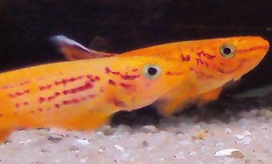
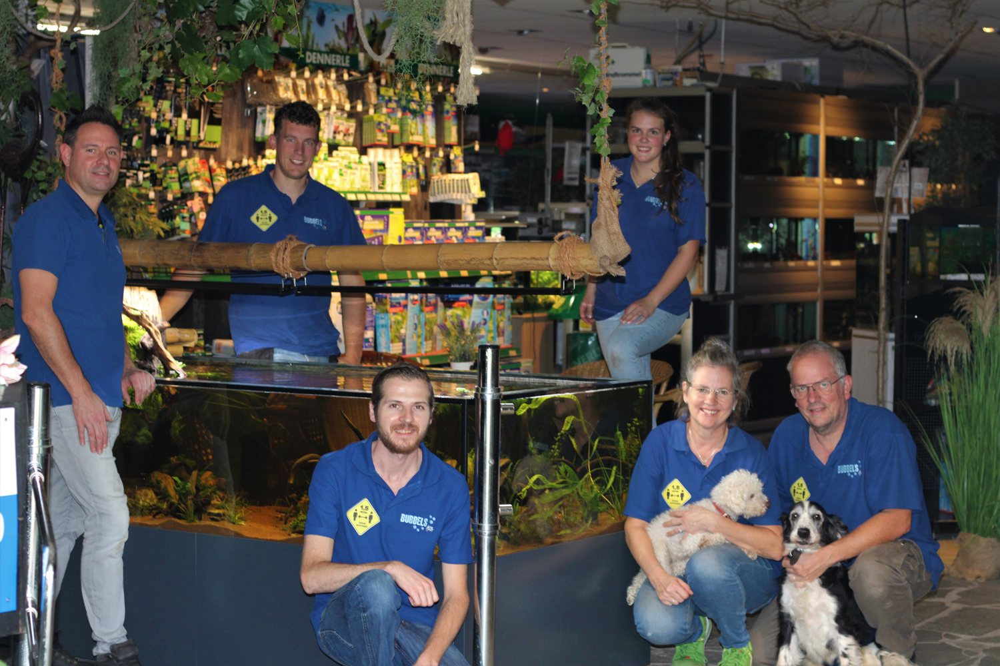
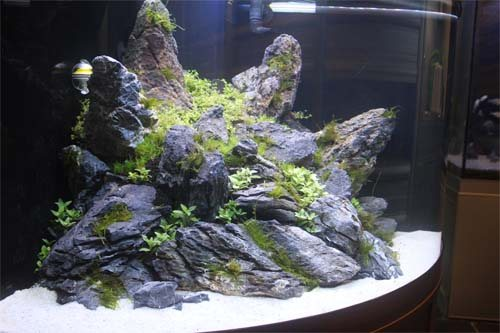
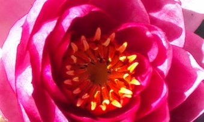
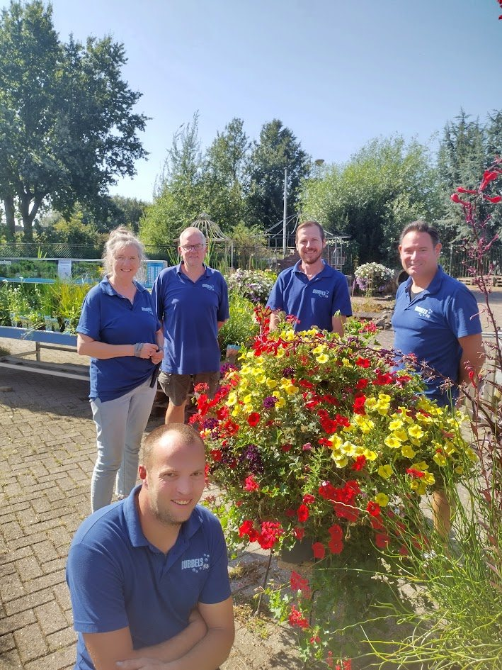

Tropische vissen
Vissen uit Afrika, Azië, Zuid-Amerika en het Malawimeer. Plus een showroom met aquaria en alles voor het onderhoud.
600+ soorten Meer info
Meer dan 600 soorten tropische vis, verse planten en alles voor uw vijver. Met meer dan 30 jaar ervaring helpen we u graag op weg met uw aquarium of vijver.
In onze winkel doet u inspiratie op voor uw eigen aquarium of vijver. Dit vindt u bij Bubbels.

Vissen uit Afrika, Azië, Zuid-Amerika en het Malawimeer. Plus een showroom met aquaria en alles voor het onderhoud.
600+ soorten Meer info
Een zeer ruim assortiment. In onze showbakken ziet u wat er allemaal mogelijk is met beplanting.
Wekelijks vers Meer info
Vijvervissen en -planten in het seizoen, en het hele jaar door pompen, filters en UVC-lampen.
Hele jaar door Meer infoWe maken u graag wegwijs in het starten en onderhouden. Kom langs, dan kijken we samen wat u nodig heeft.
Elk seizoen vraagt iets anders van uw vijver of aquarium. Zo pakt u het aan.
Check de waterwaarden en houd ze op peil. De Gh-waarde moet half november nog 12 tot 14 zijn.
Lees de tips VoorjaarHet is voorjaar, tijd om uw vijver weer op te starten. Zo doet u dat stap voor stap.
Lees de tips ZomerHoe warmer het water, hoe minder zuurstof. Vooral voor steur en windes kan dat gevaarlijk zijn.
Lees de tips Hele jaarZweefalgen of draadalgen? Wat de oorzaak is en wat u ertegen kunt doen.
Lees de tipsMeer tips en aanbiedingen in uw mailbox? Meld u aan voor de nieuwsbrief

"Met meer dan 30 jaar ervaring zien wij ons werk toch echt als een hobby."
Bubbels is in 2000 opgericht door Dimphy en Chris, en zij staan nog steeds aan het roer. Stap voor stap is de winkel uitgebouwd tot wat hij nu is.
Samen met Frankpieter, Hans en Laurens laten we u graag kennismaken met de onderwaterwereld. Wilt u dat kleine stukje natuur in uw huiskamer of tuin? Kom gerust langs.
Bekijk de vissen en planten zelf en vraag gerust om advies. U vindt ons aan de Voltweg.